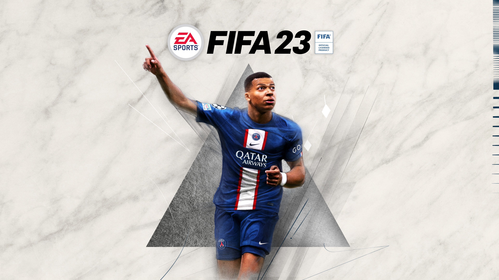

Mina intressen
Mitt första intresse är Fotboll jag började spela fotboll när jag var 10 år gammal.
I dags läget spelar jag för brommapojkarna och drömmen är att spela utomlands (professionell)
Jag gillar också att spela spel som Fifa som är ett fotbolls spel och GTA
